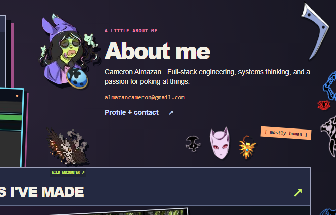
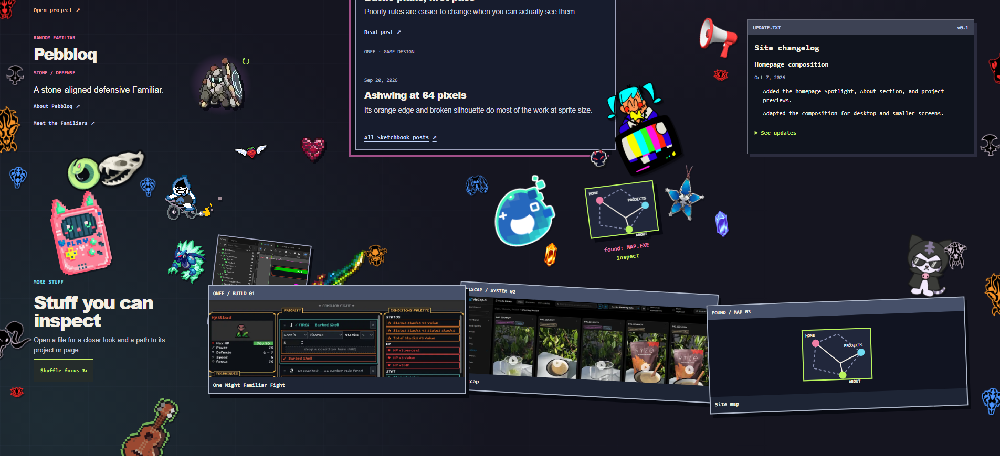

Regional details




Composition key
A · Left perimeter
Warmer, denser, and more cropped. Large orange opening skull; little masks and fangs; a broad lower ram. Unequal heights and dark breaks.
B · Right perimeter
Cooler echoes, interrupted by Projects and updates. Fewer instances; broad open gaps remain. It answers the left edge without mirroring it.
C · Profile keepsakes
Two collected Spotlight pins, a portrait brooch, a boomerang at the outer About corner, and a small pink/gold/lavender group below the biography.
D · Gear bridge
Three tiny, enlarged pixel items between Spotlight and Working On. A loose reference pocket, with no fake inventory UI or new interactions.
E · Familiar / toys
Winged berry below the real Familiar; snake ring and skull overlap farther left. Pink handheld and small rider form a staggered lower pocket.
F · Sketchbook broadcast
Larger Miku/TV cutout tucks against the feed's lower-right edge, with one small darker badge. The reading surface stays clear.
G · Update announcement
Dimensional red megaphone beside UPDATE.TXT, with one small red grin. A direct prototype relationship that still makes sense in production.
H · Found-map discoveries
Cyan slime, hanging Wayfinder, blue Noise, and two unequal crystals gather around the actual inspectable diagram. The map remains unobstructed.
I · Archive sediment
Real Godot material behind the files; a pixel creature and green sword nearby; dark cat behind the opposite corner; brown ukulele below.
All supplied images
The contact sheets are an inspection catalogue, not a proposed grid layout. The full asset review explains each selection and all seven reserves.


Enlarged tiny-sprite inspection · Initial exploration before revisions


No new production placements, renderer, or editor were implemented. The temporary capture server and browser were stopped. This review opens from the filesystem.